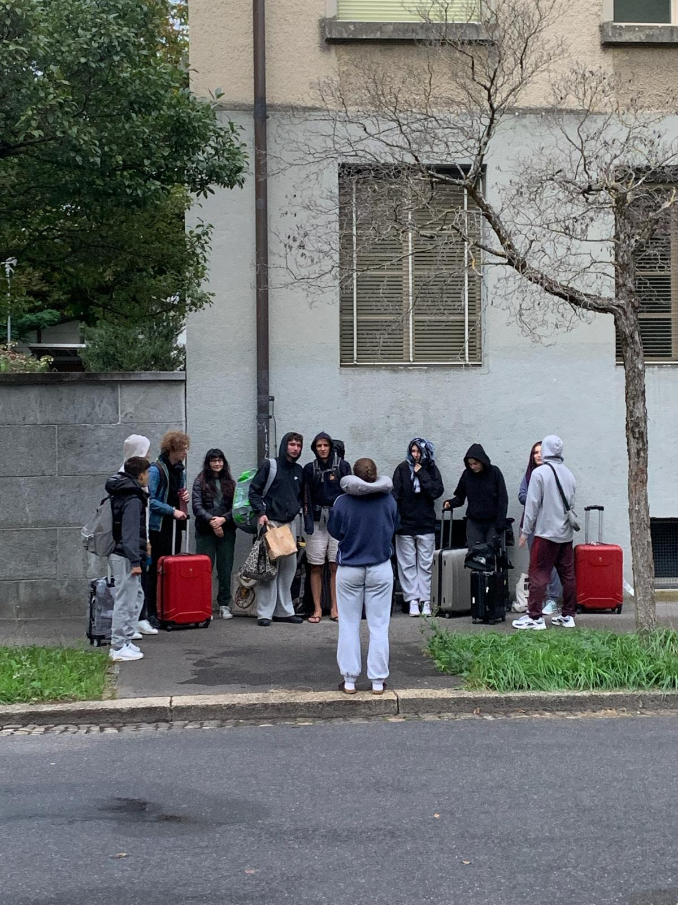
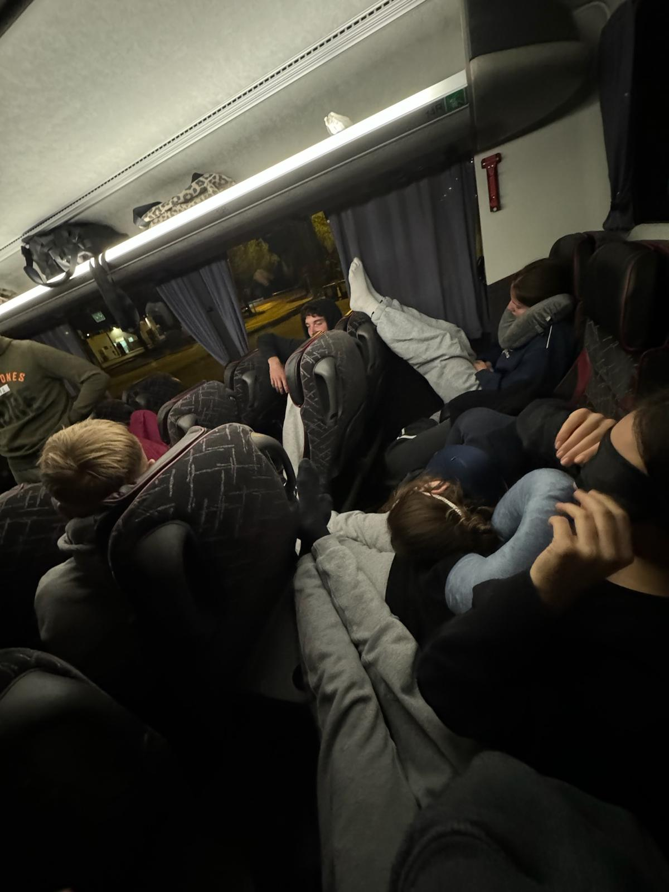

Bye-Bye, Berne.
Yesterday I left the house, and looked at it one last time, before getting into the bus and driving to school. Four weeks, that's how long I won't be home. I have probably been away longer, at some point in life. Still, this feels different.
 Our class, waiting for the bus.
The journey has started off with the Matura Trip. After spending 16 hours cramped up in a bus, we arrived safely in Valencia. The weather greeted us with sunrays and some wind. I can't complain, the thermometer's showing 26°C.
I will continue my journey by hitchhiking from the north of Spainall the way to Paris. There, I'll meet my dad and my brother and together we'll fly to Guadeloupe, in the Caribbean.
My theory, as to why this trip might be different, is quite simple: There are so many changes coming! I am now in my fourth year of Gymnasium, and it feels as if I walked into that school for the first time Yesterday. In many aspects I have grown, still, the thought of having to choose what I want to study scares me. Being more and more responsible for myself scares me. This trip, in some sense, is a prequel as to what I want my life to be: Free, travelling and just enjoying what I do.
 Getting cozy in the bus.